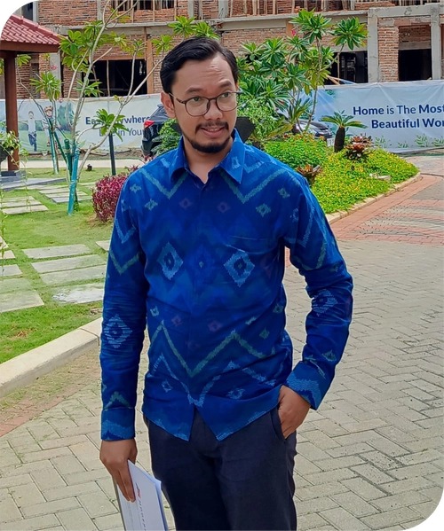

Sejak berdiri
Firma berkembang dengan fokus pada kualitas analisis dan pendampingan yang terarah.
Alwi Lawyers membantu individu, keluarga, dan badan usaha menghadapi persoalan perdata, pidana, keluarga, bisnis, dan pertanahan dengan analisis yang jelas, komunikasi yang terbuka, dan langkah hukum yang dirancang sesuai tujuan klien.

Alwi Lawyers dirancang untuk menjadi representasi hukum yang tidak hanya paham norma dan prosedur, tetapi juga mampu menerjemahkan persoalan hukum klien menjadi langkah yang konkret dan terukur.
Firma berkembang dengan fokus pada kualitas analisis dan pendampingan yang terarah.
Ruang lingkup layanan luas untuk individu maupun badan usaha.
Founder telah menempuh profesi advokat dan berlisensi sesuai organisasi profesi.
Memberi titik kontak yang jelas bagi calon klien yang ingin berkonsultasi langsung.
Setiap persoalan hukum memiliki dinamika yang berbeda. Karena itu, Alwi Lawyers menempatkan analisis awal, strategi penyelesaian, dan komunikasi kepada klien sebagai bagian yang sama pentingnya dengan proses hukum itu sendiri.
Memetakan fakta, posisi hukum, dan opsi tindakan dengan cepat.
Mengarahkan klien pada langkah hukum yang sesuai kepentingan dan kondisi perkara.
Mulai dari konsultasi, penyusunan dokumen, negosiasi, hingga persidangan.
Website ini diarahkan untuk mencerminkan karakter firma hukum yang profesional: formal, tenang, jelas, dan meyakinkan bagi calon klien perorangan maupun korporasi.
Struktur layanan ini dibuat lebih formal agar mudah dipahami calon klien dan tampil lebih meyakinkan saat dipresentasikan.
Pendampingan hukum pada tahap pemeriksaan, penyelidikan, penyidikan, kejaksaan, hingga persidangan.
Opini hukum, masukan strategis, dan arahan tindakan untuk masalah perorangan maupun perusahaan.
Penyusunan, revisi, dan telaah kontrak agar kepentingan hukum klien terlindungi dengan baik.
Pendampingan untuk badan usaha, transaksi bisnis, pembentukan badan hukum, dan persoalan korporasi.
Penanganan sengketa wanprestasi, perbuatan melawan hukum, penipuan, penggelapan, dan tindak pidana lainnya.
Layanan perceraian, hak asuh, ahli waris, hibah, wasiat, dan persoalan hukum keluarga lainnya.
Kejujuran, keterbukaan, dan kepercayaan menjadi fondasi hubungan antara firma dan klien.
Tim diarahkan untuk sigap membaca situasi, menyusun opsi, dan memberi arahan secara cepat.
Setiap langkah hukum dibangun dengan pertimbangan risiko, tujuan, dan hasil yang realistis.
Salah satu kesan profesional pada website firma hukum adalah adanya alur layanan yang jelas, sederhana, dan mudah dipahami.
Klien menyampaikan persoalan dan dokumen dasar agar ruang lingkup masalah dapat dipetakan.
Firma menyusun pandangan awal, opsi strategi, serta langkah hukum yang paling relevan.
Langkah hukum dijalankan secara terukur melalui negosiasi, penyusunan dokumen, atau proses formal.